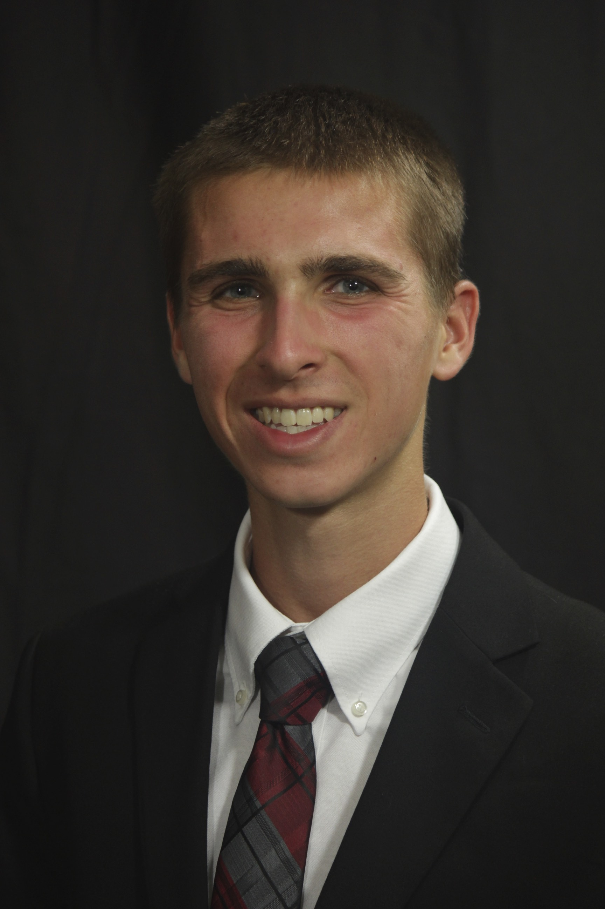

Our Candidates
Sara Hahn
Hey yall! My name is Sarah Hahn and I'm running for secretary of ACM! I've been programming since high school where I was taught sql and java by a man who was up in the ranks at amazon when they were considering calling it relentless. He inspired me to study Computer Science and I have increasingly grown more passionate about it every year! I would love to see the popularity of ACM grow and to have the members learn more about cyber security and related jobs.
Cody Rivera
 Cody wants to improve CS at UA by increasing the CS department and ACM's recruiting efforts, hosting Lisp tutorials to convince people that it is the best language, and spreading the joys of theoretical CS to everyone.
Cody wants to improve CS at UA by increasing the CS department and ACM's recruiting efforts, hosting Lisp tutorials to convince people that it is the best language, and spreading the joys of theoretical CS to everyone.
Ethan Mines

Ethan wants to change CS at UA by adding UML to the CS100 curriculum, making acm.cs.ua.edu as bare-bones as this site, and holding FORTRAN workshops so our graduates can get jobs at NASA and the DoD doing maintenance programming for the rest of their lives.